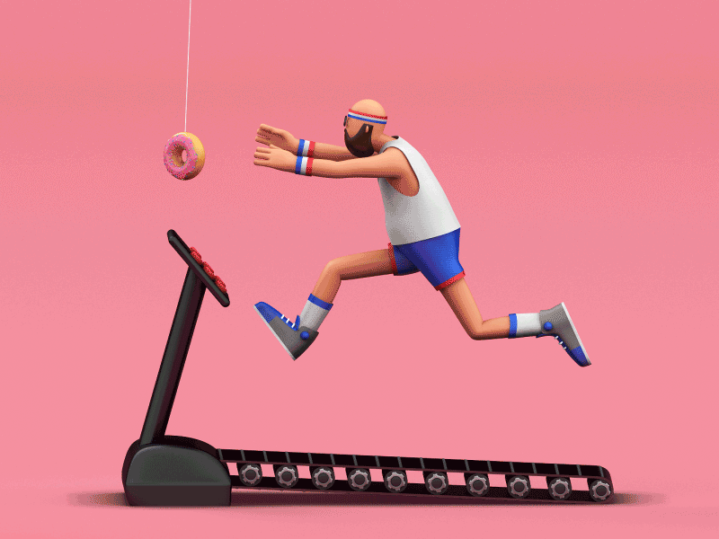

Camera Test
This is the first website test. Image tracking and AR recording are not enabled yet.
Tap Open Camera to test your phone.
Print Artwork

Animation Preview

This is the first website test. Image tracking and AR recording are not enabled yet.
Tap Open Camera to test your phone.
